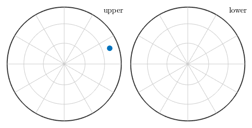
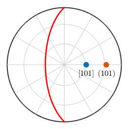
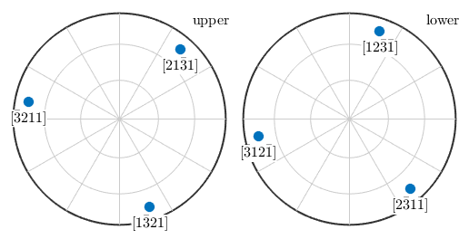

Explains how to define crystal directions by Miller indices and how to compute crystallographic equivalent directions.
| On this page ... |
| Definition |
| Plotting Miller indices |
| Symmetrically Equivalent Crystal Directions |
| Angles |
| Conversions |
| Calculations |
Crystal directions are represented in MTEX by variables of type Miller which represent a direction with respect to the crystal coordinate system a, b, c. Alternatively, a crystal direction may also be defined in the reciprocal space, i.e. with respect to the axes a*, b*, c*. Essentially all the operations defined for general directions, i.e. for variables of type vector3d are also available for Miller indices.
Since crystal directions are always subject to a certain crystal reference frame, the starting for any crystal direction is the definition of a variable of type symmetry
cs = crystalSymmetry('triclinic',[5.29,9.18,9.42],[90.4,98.9,90.1]*degree,... 'X||a*','Z||c','mineral','Talc');
Now a crystal direction can be defined either by its coordinates u, v, w with respect to the crystal coordinate system a, b, c,
m = Miller(1,0,1,cs,'uvw')m = Miller size: 1 x 1 mineral: Talc (-1, X||a*, Z||c) u 1 v 0 w 1
or in the reciprocal space, by its coordinates h, k, l with respect to axis a*, b*, c*
m = Miller(1,0,1,cs,'hkl')m = Miller size: 1 x 1 mineral: Talc (-1, X||a*, Z||c) h 1 k 0 l 1
In the case of trigonal and hexagonal crystal symmetry, the convention of using four Miller indices h, k, i, l, is also supported
cs = loadCIF('quartz') m = Miller(2,1,-3,1,cs,'hkl')
cs = crystalSymmetry mineral : Quartz symmetry : 321 a, b, c : 4.9, 4.9, 5.4 reference frame: X||a*, Y||b, Z||c m = Miller size: 1 x 1 mineral: Quartz (321, X||a*, Y||b, Z||c) h 2 k 1 i -3 l 1
Miller indices are plotted as spherical projections. The specific projection as well as whether to plot all equivalent directions can be specified by options.
figure, plot(m,'Grid') % plot Miller indice
By providing the options all and labeled all symmetrically equivalent crystal directions are plotted together with there correct Miller indice.
figure, plot(m,cs,'symmetrised','labeled','grid','backgroundcolor','w') % plot Miller indice
A simple way to compute all symmetrically equivalent directions to a given crystal direction is provided by the command symmetrise
symmetrise(m)
ans = Miller size: 6 x 1 mineral: Quartz (321, X||a*, Y||b, Z||c) h 2 2 -3 -3 1 1 k 1 -3 2 1 -3 2 i -3 1 1 2 2 -3 l 1 -1 1 -1 1 -1
As always the keyword antipodal adds antipodal symmetry to this computation
symmetrise(m,'antipodal')ans = Miller size: 12 x 1 mineral: Quartz (321, X||a*, Y||b, Z||c) h 2 2 -3 -3 1 1 -2 -2 3 3 -1 -1 k 1 -3 2 1 -3 2 -1 3 -2 -1 3 -2 i -3 1 1 2 2 -3 3 -1 -1 -2 -2 3 l 1 -1 1 -1 1 -1 -1 1 -1 1 -1 1
The command eq or == can be used to check whether two crystal directions are symmetrically equivalent. Compare
Miller(1,1,-2,0,cs) == Miller(-1,-1,2,0,cs)
ans =
0
and
eq(Miller(1,1,-2,0,cs),Miller(-1,-1,2,0,cs),'antipodal')ans =
1
The angle between two crystal directions m1 and m2 is defined as the smallest angle between m1 and all symmetrically equivalent directions to m2. This angle is in radians and it is calculated by the funtion angle
angle(Miller(1,1,-2,0,cs),Miller(-1,-1,2,0,cs)) / degree
ans = 60.0000
As always the keyword antipodal adds antipodal symmetry to this computation
angle(Miller(1,1,-2,0,cs),Miller(-1,-1,2,0,cs),'antipodal') / degreeans =
0
Converting a crystal direction which is represented by its coordinates with respect to the crystal coordinate system a, b, c into a representation with respect to the associated Euclidean coordinate system is done by the command vectord3d.
vector3d(m)
ans = vector3d
size: 1 x 1
x y z
0.587215 0.203417 0.185
Conversion into spherical coordinates requires the function polar
[theta,rho] = polar(m)
theta =
1.2815
rho =
0.3335
Given a crystal orientation
o = orientation('Euler',10*degree,20*degree,30*degree,cs)
o = orientation
size: 1 x 1
crystal symmetry : Quartz (321, X||a*, Y||b, Z||c)
specimen symmetry: 1
Bunge Euler angles in degree
phi1 Phi phi2 Inv.
10 20 30 0
one can apply it to a crystal direction to find its coordinates with respect to the specimen coordinate system
o * m
ans = vector3d
size: 1 x 1
x y z
0.334986 0.443069 0.334515
By applying a crystal symmetry one obtains the coordinates with respect to the specimen coordinate system of all crystallographically equivalent specimen directions.
p = o * symmetrise(m);
plot(p,'grid')
| DocHelp 0.1 beta |